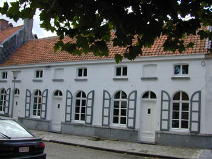

Dit wordt het dus niet …
donderdag 13 maart 2003 | Persoonlijk

Het was het meest linkse huisje op de foto. De voordeur achter die lantaarnpaal. Charmant, maar toch zo klein vanbinnen. Mooie omgeving vlakbij, ongezellig tuintje… Er komen er nog wel.
UPDATE: Dit is het dus wél geworden! Het kan verkeren…
stefan op 13 maart 2003
Hehe, een gouden raad van iemand die net zijn zoektocht beëindigd heeft: Eerst naar iets gaan kijken waar je weinig interesse in hebt… ;)